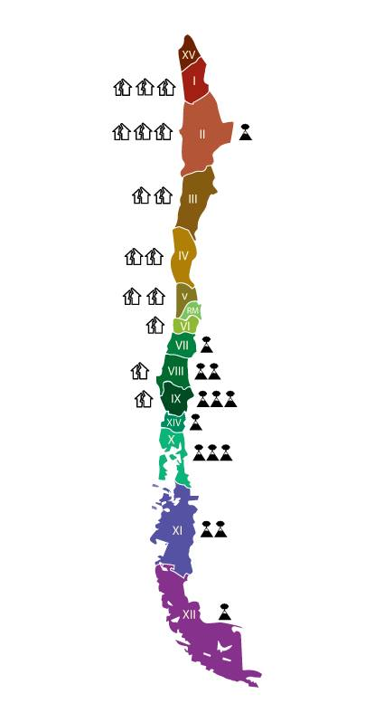

CHILE, un país que aprende
Se busca representar visualmente si, después de una catástrofe natural, somos capaces de reconstruirnos. Los datos representados en los gráficos se pueden acceder en el siguiente
link
Inicio
Proyecto
